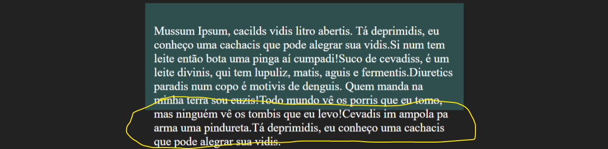
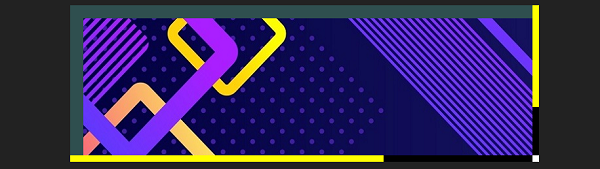

O overflow, ou transbordamento é um termo utilizado quando o conteúdo de um contêiner extrapola os limites da caixa, e isto pode acontecer por alguns motivos:
1. A caixa dinâmica recebe dados inseridos pelo usuário e estes dados extrapolaram o limite da caixa.
2. A responsividade diminui o tamanho de uma caixa até torná-la menor que seu conteúdo.
3. Uma caixa é criada para transbordar seu conteúdo automaticamente.
O overflow é útil em vários casos, como, por exemplo, diminuir a quantidade de rolagem de página exibindo parte da informação numa caixa secundária menor que seu conteúdo e que oferece uma barra de rolagem, podendo o usuário rolá-la individualmente ou saltá-la e continuar com a rolagem normal da página principal.
Imagine que temos uma grande quantidade de texto e precisamos ajustá-lo dentro de uma caixa com tamanho limitado, sem que de alguma forma o texto fique ilegível ou difícil de ler, temos várias opções de overflow, por exemplo:
<div id="conteiner"> <img src="minhaImagem.jpg" alt="Imagem grande pra dedéu"> </div>
Antes de tudo, vamos fazer com que um texto transborde a caixa em que está contido, definindo o overflow como visível:
<style>
#conteiner {
overflow: visible;
margin: auto;
width: 50%;
height: 200px;
background-color: darkslategray;
padding: 20px;
}
</style>
O resultado é:
Overflow oculto:
overflow: hidden;
Overflow com rolagem:
overflow: scroll;
Overflow automático:
overflow: auto;
Podemos ainda definir o overflow horizontal ou vertical, decidindo para onde o elemento deve transbordar e se deve ou não ser exibida uma barra de rolagem:
overflow-x: auto; overflow-y: scroll;
Neste exemplo, uma barra de rolagem vertical sempre será exibida, e uma barra de rolagem horizontal será exibida somente se o conteúdo extrapolar os limites da caixa.
Você já pode ter visto sites com uma barra de rolagem estilizada, isto pode ser feito muito facilmente utilizando webkits, da seguinte maneira:
Largura da barra vertical:
::-webkit-scrollbar { width: 10px; }
Altura da barra horizontal:
::-webkit-scrollbar { height: 10px; }
Cor de fundo da barra:
::-webkit-scrollbar-track { background: black; }
Cor da barra:
::-webkit-scrollbar-thumb { background: yellow; }
Hover da barra:
::-webkit-scrollbar-thumb:hover { background: white; }
Olha que resultado bacana:
